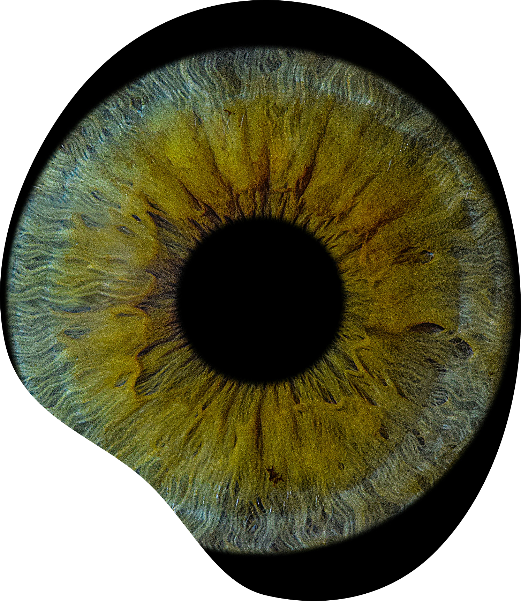

Olá, Maria!
Chat Bot
Ajuda para o seu cotidiano e mais...

O mundo real, adaptado a ti.
O CROMA ajuda-te a identificar, treinar e adaptar a tua visão. Uma ponte digital entre o que vês e a realidade, desenhada para a tua autonomia.
Ajuda para o seu cotidiano e mais...
Soluções pensadas para a inclusão digital.
O nosso foco é remover barreiras visuais através de ferramentas interativas e inteligentes. Não entregamos apenas uma aplicação; entregamos uma nova forma de interpretar o mundo, unindo rigor científico a uma experiência de utilizador fluida e moderna.
Análise da percepção visual para identificar o tipo e grau de daltonismo.
Exercícios práticos focados em situações reais.
Incorporação do sistema de símbolos ColorADD.
Transformamos a aprendizagem num desafio recompensador.
Hoje, a minha relação com o mundo visual é diferente. O CROMA não "curou" o meu daltonismo, mas deu-me a literacia visual que o mundo nunca me ofereceu. Sinto que finalmente tenho o controlo sobre a minha própria percepção.